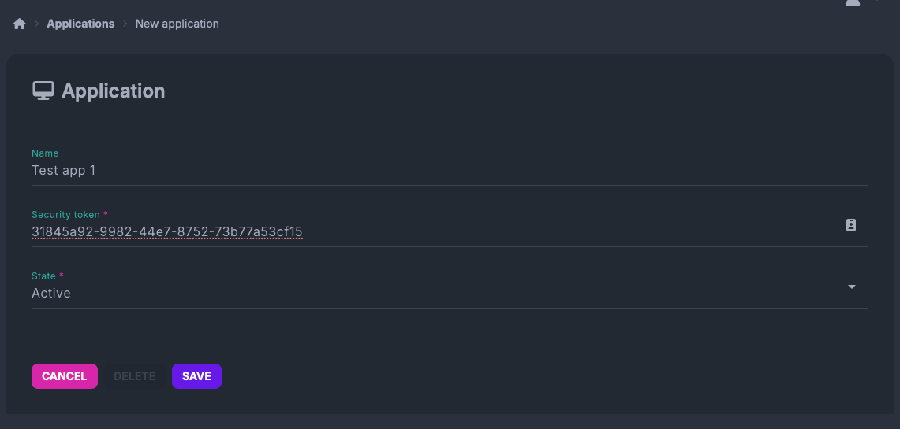

In this section you can find examples of how to use the esthesis CORE Digital Twin API to interact with Digital Twins.
Preparation
Prerequisites
You must meet the following prerequisites to follow the examples below:
You must have created an Application in esthesis CORE. Make the application Active and note down the token assigned to it:

You must have a shell with the curl command available.
You must have at least one device connected to esthesis CORE.
Optionally, you may have the jq utility installed to parse JSON responses.
Authentication
Authentication to the Digital Twin API is taking place via a custom HTTP header X-ESTHESIS-DT-APP. You must include this header in every request to the API, with the value being the token of the application you created in esthesis CORE. For example, if your token is abc123, you would include the header as follows:
curl -H "X-ESTHESIS-DT-APP: abc123" https://...
Examples
Set the following environment variables, so that you do not have to repeat them in every example. Make sure you replace the values with the actual values from your own esthesis CORE installation:
Do not forget to replace dash-dev-1 device hardware ID used in the following examples with an actual hardware ID of a device connected to your esthesis CORE installation.